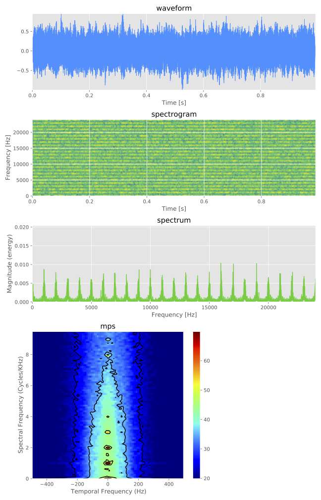

Visualization¶
You can visualize output auditory signal optionally.
ASPEN is introduced to pipeline of plots (such as waveform, spectrum and so on).
If you already have run the iterated rippled noise (IRN) example (see Run with configuration file), you can find the PDF data/iterated_rippled_noise/vis/iter8_delay1.pdf:

The plots are defined by visualization section of configuration file such as:
# visualization
visualization-pipeline: [waveform, spectrogram, spectrum, mps]
visualization-outdir: "data/iterated_rippled_noise/vis"
Note
The choice of visualization type can be confirmed by --visualization-pipeline arguments from the output of command such as generate.py --stimulus-module iterated_rippled_noise --help
For example, the waveform and spectrum of the IRN are shown selectively if the configuration has been overwritten such as
# visualization
visualization-pipeline: [waveform, spectrum]
visualization-outdir: "data/iterated_rippled_noise/vis"
or the arguments have been overridden such as:
generate.py --conf conf/iterated_rippled_noise.conf --visualization-pipeline waveform spectrum
The output PDF is: